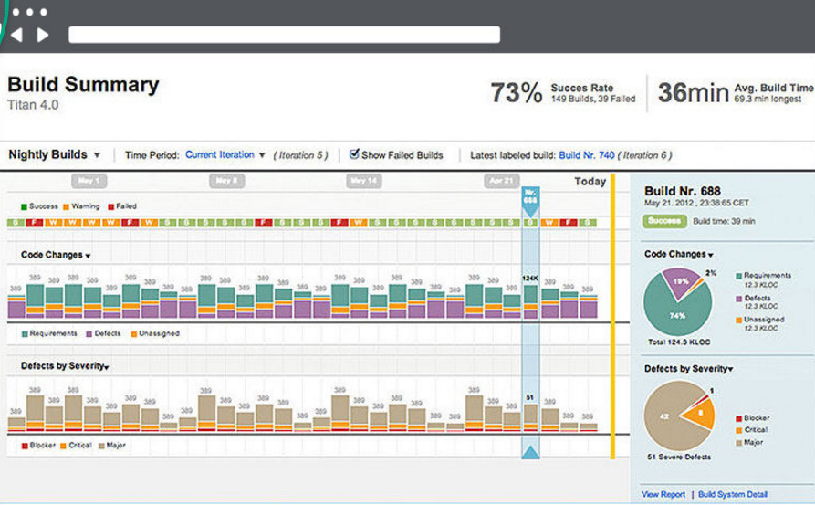
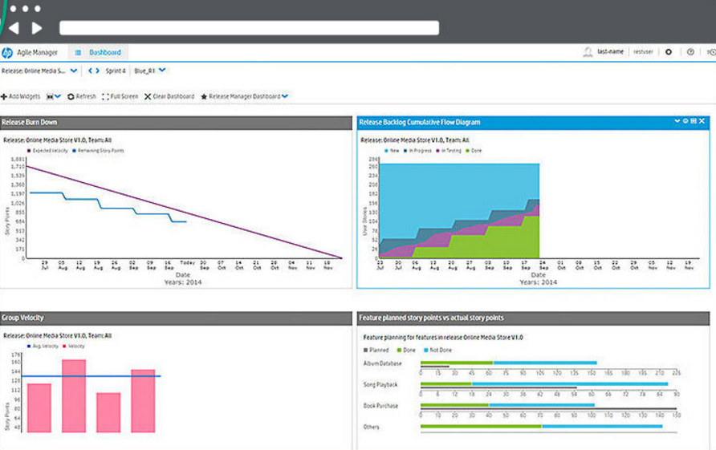
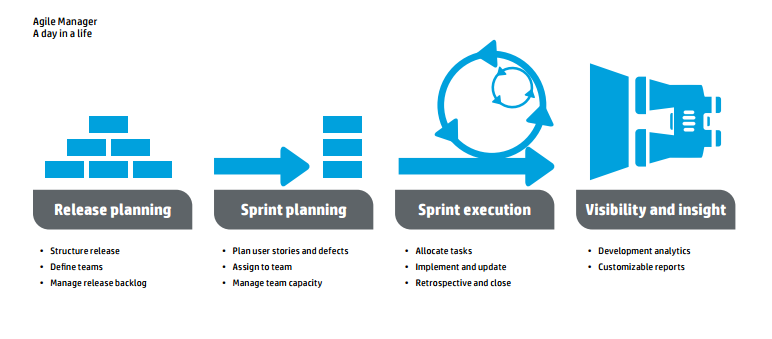

HP AGM
Agile Manager is an agile management solution for organizing, planning and executing agile projects. It can support single teams or multiple, geographically distributed teams across an enterprise.
HP Agile Manager ("AGM") is an on-demand Software-as-a-Service
(SaaS) solution for Agile Project Management. HP Agile Manager
software acts as the communication hub and decision support
system to organize, plan, and deliver Agile projects. HP AGM
empowers teams to manage their backlog with unparalleled
visibility into development data, and supports popular Agile
methodology such as SCRUM. HP AGM is available either on a
month-to-month subscription basis or on a flexible term
subscription basis thereby accommodating the timelines and
budget of virtually any project.
HP Agile Manager, a new software-asa-service
(SaaS) solution, is a unified, easy-to-use communication
hub and decision support system that streamlines the process of
organizing, planning, and delivering Agile projects. It helps you manage
communication among multifunctional teams; provides unparalleled
visibility into projects; and integrates with your application lifecycle
management (ALM) strategies, tools, and processes.
The result: With HP Agile Manager, you not only empower your Agile
development teams to be more agile, you also boost the responsiveness
and agility of the entire enterprise, thereby increasing the value IT
delivers to the organization.
Agile Project Management
HP Agile Manager provides application teams with rich Agile
activity management and real-time insights about the status of
source code, builds, and unit tests. A critical part of its analytics
capabilities is how it aggregates source code and build
management information from heterogeneous development
environments and surfaces the meaningful data to provide team
members and leaders with greater real-time insight.
At the core of HP Agile Manager is HP Application Lifecycle
Intelligence (ALI), a technology that was originally developed as
part of the HP Application Lifecycle Management (ALM) software.
HP ALI aggregates information from multiple development tools to
establish complete traceability in the development process and
surface actionable information for the team and stakeholders
alike. HP ALI achieves this by taking information from development
environments such as build servers and source code repositories
and links this with project information like release plans, user
stories, defects and tests.
HP Agile Manager presents, in real-time, an intuitive view of all this
data in a single Web interface, so that everyone has easy visibility
into the same information and insight into potential issues.
Unparalleled visibility for faster, more
predictable delivery
HP Agile Manager unites your teams by providing real-time, 360-degree
visibility into tasks, metrics, and progress. This universal insight
empowers teams to collaborate and self-organize so they can deliver
targeted Agile results; and it supplies managers with the up-to-date
information needed to make more informed decisions.
HP Agile Manager can support a single team or allow you easily to scale
Agile by enabling multiple, geographically distributed teams across the
enterprise


Key points-
- A drag-and-drop interface that enables easy release and sprint planning, task allocation, and capacity management across teams and individuals
- Task and release planning boards that give all team members ready insight into the entire project landscape, the flow of work, and potential issues or bottlenecks
- Seamless integration with ALM and Quality Center using comprehensive Continuous Integration Tools.
- Strategically aligning empowered agile teams with enterprise business objectives.
- Real-time feedback on progress through highly customizable dashboards, metrics, and KPIs, minimizing administration while increasing prediction
- Advanced development analytics that aggregate source code and build information to surface meaningful insights into application changes, allowing for precise risk analysis and more informed decisions
- Assuring systemic quality of code vital to any business that depends on software.
- Helping teams be hyper-productive and highly efficient through fully visible work environments.
Agile focused ease of use
HP Agile Manager is specifically designed to make life easier for Agile
teams performing Agile tasks. It boasts a clean, intuitive design
and offers a set of innovations that removes latencies, bolsters Agile
practices, and fosters continuous improvement.
Specifically, it delivers:
- An intuitive, web-based interface with advanced visualization
that enables teams to come up to speed quickly and perform Agile
activities efficiently
- IDE integration, so developers have freedom to work the way they
prefer to work yet still collaborate and share information seamlessly
with their team members
- Push-button workspace provisioning, which dramatically cuts
time spent on developer environment setup so teams can focus
on delivering software
- Built-in sprint closure and retrospective capabilities to easily assess
"done" status, move incomplete tasks to the next sprint within
the context of the close process, and assist teams with ongoing
improvement of their Agile practices
- Instant-on, anytime/anywhere access via SaaS delivery; plus, as
an HP software solution, HP Agile Manager is backed by more than
a decade of experience delivering SaaS to Fortune 100 customers.
Seamless integrations for end-to-end
agility
True enterprise agility is born from more than rapid development. It
requires seamless execution across the complete application lifecycle,
which encompasses planning, building, and running the application.
As a component of the HP IT Performance Suite, HP Agile Manager
leverages the breadth of the HP Software portfolio for integrated, crossfunction
collaboration and end-to-end agility. Seamless integrations
help reduce the "change lag" and miscommunication stemming from
manual handoffs among IT silos, resulting in greater change-readiness
and responsiveness to business demand.
HP Agile Manager provides:
- Two-way synchronization between HP Agile Manager and HP ALM/
Quality Center, allowing enterprises to achieve velocity and quality
by leveraging the best-in-class quality management and continuous
testing capabilities found in the HP ALM suite
- DevOps integrations with HP Performance makes code changes and build analytics visible to operations so
a performance problem can quickly be traced to the change that
caused it
- DevOps integrations with HP Performance also allows operations to open a defect within HP Agile Manager so
production problems are visible and can be effectively prioritized
against other items in the backlog
- Integration to HP Project and Portfolio Management to allow
executives to prioritize and track activities from Agile Manager
alongside all other investments for a comprehensive portfolio view

A simpler, smarter way to manage
collaborative development
HP Agile Manager builds on HP's experience and expertise with Agile
methodologies and the application lifecycle-so you can extend agility
beyond your development teams to the enterprise itself. Simply put, it
empowers your business to remain nimble, even in the face of constant
change and complexity.
|